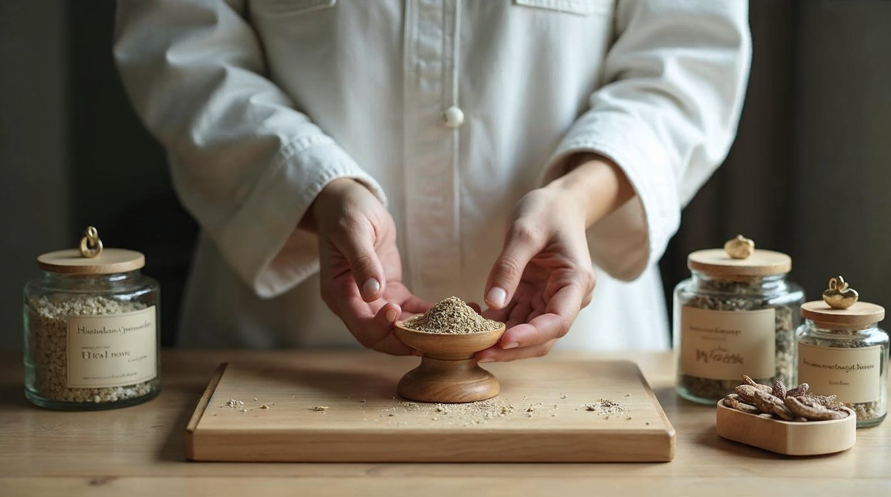

이종호 한의사 감수좋은꿈참사랑한의원 대표원장 (한의사 면허번호 19769)발행 2026-11-26 · 수정 2026-11-26
이 글의 차례
불을 끄고 누운 새벽, 방이 조용해질수록 귀 안의 삐 소리가 점점 또렷해집니다. 돌아누워도, 베개로 귀를 덮어도 소리는 그대로라 잠이 달아나지요. 이명은 먼저 이비인후과에서 귀와 청력 상태를 확인하고, 그다음 잠과 긴장, 목과 턱의 뭉침을 함께 살피는 순서로 봅니다.
다만 이명과 함께 갑자기 한쪽 귀가 잘 안 들리기 시작했다면 순서가 달라집니다. 돌발성 난청은 진료를 빨리 시작할수록 좋다고 알려져 있어, 기다리지 말고 가능하면 그날 바로 이비인후과를 찾으셔야 합니다.
심한 어지럼과 구토, 한쪽 얼굴 마비가 함께 왔다면 이비인후과 예약을 기다릴 때가 아닙니다. 가까운 응급실이 먼저입니다.
진료실에서 이명 이야기를 꺼내시는 분들은 대개 조금 머뭇거리십니다. 남에게는 들리지 않는 소리라 설명하기도 어렵고, 별것 아니라는 말을 들을까 봐서지요. 저는 그 소리가 얼마나 신경 쓰이는지, 그 때문에 밤이 얼마나 길어졌는지부터 듣고 싶습니다.
왜 귀에서 소리가 들릴까요
이명(耳鳴)이라는 이름은 귀가 운다는 뜻입니다. 바깥에서 나는 소리가 없는데도 귀나 머릿속에서 삐 소리, 윙 소리, 매미 소리, 바람 소리 같은 것이 들리는 것을 말합니다. 생각보다 많은 분이 겪고, 잠깐 들렸다 사라지는 경우도 흔합니다.
원인은 한 가지가 아닙니다. 나이가 들며 청력이 조금씩 달라지거나, 큰 소리에 오래 노출된 뒤 이명이 함께 나타나는 경우가 많습니다.
귀지가 귀를 막고 있거나 감기 뒤 귀 안에 염증이 생긴 것처럼 귀 자체의 문제도 있습니다. 드시는 약 가운데 이명과 관련될 수 있는 것도 있어서, 약 이름도 꼭 여쭙니다.
그래서 저는 이명 이야기를 들으면 귀부터 확인하시라고 말씀드립니다. 청력과 귀의 상태는 이비인후과의 청력 검사와 진찰로 확인하는 것이 먼저이고, 그 결과가 있어야 다음 이야기를 제대로 이어 갈 수 있습니다.
같은 소리라도 언제 들리느냐에 따라 크기가 달라집니다. 낮에는 주변 소리에 묻혀 있다가 조용한 밤이 되면 또렷해진다는 분이 많습니다. 소리가 커졌다기보다 주변이 조용해져 더 잘 들리게 된 경우가 흔합니다.
잠과 긴장도 소리를 느끼는 크기에 영향을 줍니다. 피곤하고 잠이 부족한 주에 이명이 더 크게 느껴졌다는 분이 많고, 이명이 신경 쓰여 잠을 설치면 다음 날 소리가 또 크게 느껴집니다. 잠을 못 자면 통증을 더 크게 느끼는 것과 닮은 고리입니다.
그래서 저는 나누어 여쭙습니다. 소리 때문에 잠이 안 드시는 건지, 잠이 안 와서 누운 채 소리에 귀를 기울이게 되시는 건지요. 비슷해 보이는 두 문장이지만, 어느 쪽이냐에 따라 먼저 손댈 곳이 달라집니다.
일부 분들은 턱을 움직이거나 목을 돌릴 때 소리의 모양이 달라진다고 하십니다. 이를 꽉 물면 소리가 커지거나, 고개를 한쪽으로 돌리면 음이 바뀐다는 식입니다. 이런 경우에는 목과 턱 주변의 긴장 상태도 함께 살펴봅니다.
목 뒤와 두피, 턱 주변 근육은 서로 이어져 있어 한쪽이 굳으면 다른 쪽도 같이 당기기 쉽습니다. 옆에서 보았을 때 귓구멍이 어깨 끝보다 앞으로 나와 있다면 머리가 앞으로 쏠린 자세일 수 있어, 목 뒤가 쉬지 못하고 있는지도 함께 봅니다.
한의학에서는 귀에서 나는 소리만 떼어 보지 않고 잠과 소화, 몸이 차거나 더운 느낌, 마음의 긴장을 함께 봅니다. 이명이 어떤 하루에서 커지는지 알아야 무엇부터 해 볼지 정할 수 있어서입니다.
다만 맥이나 혀만으로 이명의 원인을 가려낼 수는 없습니다. 진맥만으로 모든 것을 알 수 없다는 것을 알기에, 귀 검사를 먼저 권해 드리는 것입니다.
이어폰을 오래 쓰거나 시끄러운 길을 오가는 분이라면 시끄러운 지하철로 출퇴근한 뒤 귀가 먹먹하고 삐 소리가 날 때는 어떻게 살피나요? 글에 볼륨과 듣는 시간을 줄이는 방법을 따로 적어 두었습니다.
예를 들면 이런 경우입니다
어느 한 분의 이야기가 아니라, 진료실에서 자주 마주치는 모습을 몇 가지 그려 보겠습니다.
예를 들어 마감이 몰린 몇 주 동안 잠이 짧아지고 어깨가 돌처럼 굳은 뒤로, 밤에 누우면 삐 소리가 커진다는 경우가 있습니다. 이런 분께는 청력 검사를 받으셨는지부터 여쭙고, 그다음 잠든 시각과 깨는 횟수, 목과 어깨의 뭉침을 함께 봅니다.
예를 들어 자고 일어나면 턱이 뻐근하고, 입을 크게 벌리거나 이를 꽉 물 때 소리가 달라진다는 분도 있습니다. 이런 경우에는 낮 동안 이를 물고 지내지는 않는지, 고개를 돌릴 때는 어떤지 함께 확인하고 목과 턱 주변의 긴장을 살핍니다.
예를 들어 양쪽 귀가 조금씩 어두워져 텔레비전 소리를 자꾸 키우게 되고, 조용한 저녁마다 매미 소리가 들린다는 어르신도 계십니다. 이럴 때는 이비인후과 청력 검사를 먼저 받으시도록 안내합니다.
잘 들리지 않으면 대화가 줄고 바깥 활동도 줄어들기 쉽습니다. 되묻는 일이 미안해 모임에 덜 나가게 되는 분도 계시지요. 그래서 어르신의 이명 이야기를 들으면, 소리만큼 청력을 살피는 일도 챙기시라고 말씀드립니다.
먼저 이렇게 여쭙니다
이명은 남에게 들리지 않는 소리라 말로 옮기기가 어렵습니다. 그래서 저는 질문을 잘게 나누어 여쭙니다. 아래 질문에 스스로 답해 보시면 지금 어느 쪽 확인이 먼저인지 가늠하는 데도 도움이 됩니다.
- 언제부터 들렸나요? 어느 날 갑자기였나요, 서서히였나요?
- 한쪽 귀인가요, 양쪽인가요, 머릿속 전체인가요?
- 삐, 윙, 매미, 바람 소리처럼 일정한가요, 맥박처럼 쿵쿵 뛰나요?
- 귀가 먹먹하거나 말소리가 예전보다 잘 안 들리나요?
- 큰 소리에 노출된 적이 있거나 이어폰을 오래 쓰시나요? 드시는 약은요?
- 턱을 움직이거나 고개를 돌릴 때 소리가 달라지나요?
- 소리 때문에 잠들기 어렵거나 자주 깨시나요?
갑자기 시작됐거나, 한쪽 귀에서만 계속 들리거나, 맥박처럼 뛰거나, 청력이 떨어진 느낌이 있다면 이비인후과 확인이 먼저입니다. 나머지 질문은 진료 때 함께 풀어 가면 됩니다.
어지럼이 함께 있다면 어떤 어지럼인지 나누어 말씀해 주시는 것이 도움이 됩니다. 어지럼이 빙빙 도는지, 아찔한지는 어떻게 구분해서 전하나요? 글에 말로 옮기는 방법을 정리해 두었습니다.
일상에서 먼저 해 볼 수 있는 것
이비인후과에서 귀에 급한 문제가 없다는 이야기를 들으셨다면, 생활에서 먼저 해 볼 수 있는 것들이 있습니다. 소리를 없애려 애쓰기보다 소리에 덜 끌려다니도록 하루를 조금씩 바꿔 보는 것입니다.
- 완전히 조용한 방보다 선풍기나 빗소리처럼 잔잔한 소리를 작게 틀어 두고 잠들기
- 잠드는 시각과 일어나는 시각을 일정하게 맞추기
- 한 시간마다 고개를 천천히 좌우로 돌리고 어깨 내리기, 윗니와 아랫니가 닿아 있으면 떼기
- 큰 소리가 나는 곳에서는 귀를 보호하고, 이어폰은 볼륨을 낮추고 쉬는 시간 두기
- 커피나 술을 마신 날 소리가 어땠는지 적어 보기
잔잔한 소리는 이명이 완전히 묻히지 않을 만큼 작게 틀어 두는 정도가 좋습니다. 소리를 덮어 버리려고 크게 틀면 그 소리가 또 하나의 소음이 될 수 있습니다. 밤새 켜 두기가 부담스럽다면 잠들 때까지만 켜지도록 맞춰 두셔도 됩니다.
따뜻한 수건으로 목 뒤를 10분쯤 데워 주거나, 손가락 끝으로 두피를 1~2분 가볍게 문질러 보셔도 좋습니다. 아프지 않을 만큼만 하시면 됩니다. 귀가 먹먹하다고 면봉으로 귀 안을 깊이 파는 것은 피해 주세요.
소리를 자꾸 확인하는 습관도 내려놓아 보세요. 아직 들리나 하고 귀를 기울일수록 소리는 더 또렷해지기 쉽습니다. 소리가 거슬리는 시간에 할 일을 하나 정해 두세요. 짧은 산책이든 손을 쓰는 일이든 괜찮습니다.
커피와 술이 이명에 주는 영향은 사람마다 다릅니다. 모두에게 끊으시라고 하기보다, 마신 날과 안 마신 날 소리가 어땠는지 직접 비교해 보시길 권합니다.
잠이 부족한 날 머리까지 무겁다면 잠을 못 자면 두통이 올 때는 어떻게 살피나요? 글도 함께 보세요. 잠을 지키는 방법은 이명을 대할 때도 그대로 쓰입니다.

한의원에서 함께 살필 수 있는 경우
이비인후과 검사에서 귀 자체에 큰 이상이 없다는 말을 들었는데도 소리가 이어지는 분들이 있습니다. 안심은 되지만 밤마다 들리는 소리는 그대로라 답답하실 겁니다. 그럴 때 한의원에서 함께 살필 수 있는 부분이 있습니다.
- 귀 자체에 큰 이상이 없다는 결과를 받았지만 이명이 이어져 잠을 설치는 경우
- 피로와 스트레스가 쌓이는 시기마다 소리가 커지는 경우
- 턱을 움직이거나 목을 돌릴 때 소리가 달라지고, 목·어깨·턱이 늘 뭉쳐 있는 경우
좋은꿈참사랑한의원에서는 이비인후과 검사 결과를 먼저 확인하고, 이명이 언제 어떻게 커지는지 충분히 듣습니다. 귀 자체에 큰 이상이 없다면 목·턱의 긴장, 잠, 스트레스를 함께 살펴 침이나 한약 같은 한의학적 관리를 검토합니다.
청력 저하가 의심되거나 아직 청력 검사를 받지 않으셨다면 이비인후과를 먼저 안내합니다. 먼저 확인할 것을 확인한 뒤 함께 살필 부분을 정하는 것이 환자분께 안전하기 때문입니다.
처음 오시면 이명이 시작된 때와 한쪽·양쪽 여부, 소리의 모양, 청력 검사 결과와 드시는 약을 먼저 듣습니다. 갑자기 청력이 떨어졌거나 어지럼이 심하다면 이비인후과나 응급실이 먼저라고 바로 말씀드립니다.
급한 신호가 없다면 그다음 양손을 내어 달라고 합니다. 저는 처음 오신 분이든 다시 오신 분이든 모든 분께 맥을 짚습니다. 맥을 짚는 동안 잠은 어떤지, 소화와 배변은 편한지, 몸이 차거나 더운 느낌은 없는지 여쭙습니다.
필요하다고 판단되면 혀를 보고, 목과 어깨, 턱 주변은 손으로 짚어 굳은 곳을 확인합니다. 적어 오신 소리 기록이 있으면 함께 펼쳐 보며 소리가 커지는 날의 공통점을 찾습니다.
그다음 지금 무엇부터 해 볼지 설명드리고, 침이나 한약 상담 가운데 맞는 방법을 함께 정합니다. 다시 오시면 지난번 이후 잠들기가 어땠는지, 소리가 크게 느껴진 날 무슨 일이 있었는지부터 이어서 여쭙습니다.
이렇게 기록해 오시면 상담이 쉬워집니다
이명은 진료실에서 제가 직접 들을 수 없는 소리입니다. 그래서 적어 오신 기록이 그 소리를 함께 듣는 귀가 되어 줍니다. 하루에 두 번, 아침과 잠들기 전에 한 줄씩이면 충분합니다.
요령은 소리의 크기와 거슬리는 정도를 따로 적는 것입니다. 같은 크기라도 어떤 날은 견딜 만하고 어떤 날은 견디기 힘들기 때문입니다. 크기는 그대로인데 거슬림만 높은 날이 있다면, 그날의 잠과 긴장을 먼저 들여다봅니다.
- 날짜와 시각, 어느 쪽 귀인지, 소리의 모양(삐, 윙, 매미, 바람, 쿵쿵)
- 소리 크기 0~10점, 거슬리는 정도 0~10점을 따로
- 그때 상황: 조용한 밤, 피곤한 날, 커피·술·이어폰, 전날 잠든 시각
- 입을 크게 벌리거나 이를 물 때, 고개를 좌우로 돌릴 때 소리가 달라지는지
- 이비인후과 청력 검사 결과지와 드시는 약 이름
예를 들면 '밤 11시, 오른쪽, 삐 소리, 크기 4, 거슬림 7, 야근한 날, 커피 세 잔, 고개를 돌리면 조금 달라짐' 정도면 충분합니다. 일주일쯤 모이면 소리가 커지는 날의 모양이 보이는 경우가 많습니다.
다만 기록이 또 하나의 숙제가 되어 하루 종일 소리를 확인하게 된다면 줄이셔도 됩니다. 기록은 소리에 매달리려는 것이 아니라, 소리가 커지는 날과 덜한 날을 나란히 놓고 보려는 것입니다.
이런 증상은 먼저 확인이 필요합니다
- 갑자기 한쪽 귀가 잘 안 들리거나 먹먹해지면서 이명이 생긴 경우(가능하면 그날 바로 이비인후과)
- 이명과 함께 심한 어지럼이나 구토가 오거나, 얼굴 한쪽에 힘이 빠지는 경우
이런 신호가 있으면 한의원보다 가까운 병원이나 응급실을 먼저 찾으세요.
이명은 대부분 서두르지 않고 살펴볼 수 있지만, 그날 바로 움직여야 하는 경우가 있습니다.
다음에 오시면 소리가 가장 크게 느껴졌던 밤, 그날 하루가 어땠는지부터 여쭙겠습니다.

여쭙는 것
- 언제부터 들렸나요? 어느 날 갑자기였나요, 서서히였나요?
- 한쪽 귀인가요, 양쪽인가요, 머릿속 전체인가요?
- 삐, 윙, 매미, 바람 소리처럼 일정한가요, 맥박처럼 쿵쿵 뛰나요?
생활에서 해 볼 것
- 완전히 조용한 방보다 선풍기나 빗소리처럼 잔잔한 소리를 작게 틀어 두고 잠들기
- 잠드는 시각과 일어나는 시각을 일정하게 맞추기
- 한 시간마다 고개를 천천히 좌우로 돌리고 어깨 내리기, 윗니와 아랫니가 닿아 있으면…
한의원에서 함께 살필 것
- 귀 자체에 큰 이상이 없다는 결과를 받았지만 이명이 이어져 잠을 설치는 경우
- 피로와 스트레스가 쌓이는 시기마다 소리가 커지는 경우
- 턱을 움직이거나 목을 돌릴 때 소리가 달라지고, 목·어깨·턱이 늘 뭉쳐 있는 경우
먼저 확인이 필요한 신호
- 갑자기 한쪽 귀가 잘 안 들리거나 먹먹해지면서 이명이 생긴 경우(가능하면 그날 바로…
- 이명과 함께 심한 어지럼이나 구토가 오거나, 얼굴 한쪽에 힘이 빠지는 경우
한눈에 보는 표
| 구분 | 핵심 |
|---|---|
| 여쭙는 것 | 언제부터 들렸나요? 어느 날 갑자기였나요, 서서히였나요? 한쪽 귀인가요, 양쪽인가요, 머릿속 전체인가요? |
| 생활에서 해 볼 것 | 완전히 조용한 방보다 선풍기나 빗소리처럼 잔잔한 소리를 작게 틀어 두고 잠들기 잠드는 시각과 일어나는 시각을 일정하게 맞추기 |
| 한의원에서 함께 살필 것 | 귀 자체에 큰 이상이 없다는 결과를 받았지만 이명이 이어져 잠을 설치는 경우 피로와 스트레스가 쌓이는 시기마다 소리가 커지는 경우 |
| 먼저 확인이 필요한 신호 | 갑자기 한쪽 귀가 잘 안 들리거나 먹먹해지면서 이명이 생긴 경우(가능하면 그날 바로 이비인후과) 이명과 함께 심한 어지럼이나 구토가 오거나, 얼굴 한쪽에 힘이 빠지는 경우 |
자주 묻는 질문
이명은 그냥 두면 저절로 사라지나요?
잠깐 들렸다 사라지는 경우도 흔합니다. 다만 며칠 넘게 이어지거나 한쪽 귀에서만 들린다면 이비인후과 청력 검사를 먼저 받아 보시길 권합니다.
이비인후과에서 이상이 없다는데 한의원에서는 무엇을 보나요?
귀 자체에 큰 이상이 없다면 목·턱의 긴장, 잠, 스트레스를 함께 살펴 침이나 한약 같은 한의학적 관리를 검토합니다. 모든 분께 맥을 짚고, 적어 오신 소리 기록을 함께 봅니다.
목이 뻣뻣하면 이명이 심해질 수 있나요?
일부 분은 목이나 턱을 움직일 때 이명이 달라지기도 합니다. 고개를 돌리거나 이를 물 때 소리가 어떤지 적어 오시면 진찰 때 함께 확인합니다.
갑자기 한쪽 귀가 먹먹하고 소리가 나요. 한의원에 먼저 가도 되나요?
갑자기 한쪽 귀가 잘 안 들린다면 가능하면 그날 바로 이비인후과 진료를 먼저 받으세요. 심한 어지럼이나 구토, 얼굴 마비가 함께 있다면 가까운 응급실로 가셔야 합니다.
좋은꿈참사랑한의원은 재진 때 지난번 이야기부터 이어서 여쭙니다. 진료시간과 예약은 오시는 길에서 확인하세요.
어디서 상담받을 수 있나요?
좋은꿈참사랑한의원은 서울 동작구 만양로2길 2 신성빌딩 3층·5층(서울 동작구 상도동, 7호선 상도역 3번 출구 근처)에 있습니다. 한의사 3명(이종호 대표원장, 조영기 수석진료원장, 정원영 진료원장)이 진료합니다. 진료시간은 평일 09:30~20:00(점심 13:00~14:00), 토·일·공휴일 09:30~15:00이며, 방문 전 전화로 확인을 권합니다. 예약은 네이버 예약, 카카오톡 상담, 전화 02-815-7510로 받습니다.
이 글은 일반적인 건강 정보이며 개인의 진단이나 치료를 대신하지 않습니다. 증상이 있거나 복용 중인 약이 있다면 진료를 통해 확인하세요. 치료 효과는 개인마다 다를 수 있습니다.
작성 기준: 일반적으로 알려져 있는 건강 정보를 참고해 정리했습니다(대표원장 감수). 증상 기록은 1~2주 동안 하루 1회, 비슷한 시간에 적어 오시면 지난 상태와 비교하기 쉽습니다.